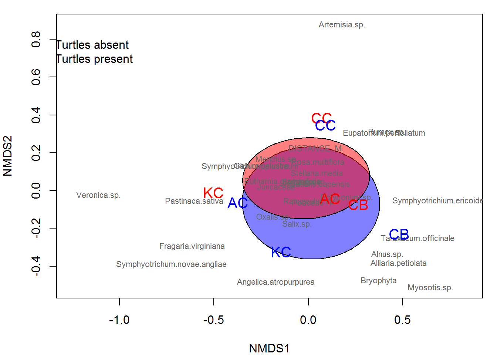

Lab 11: multivariate data analysis
Introduction
This week we are going to tak a hard left (or right depending on which is your dominant hand) and begin to discuss methods with which we can examine emergent patterns in complex, messy data sets. To begin these discussions, we will take a look at the use of multivariate techniques this week. This class of analysis kind of stands on its own compared to a lot of the other methods we have discussed so far this semester. One of the biggest changes that we will see in this lab is that we are no longer working with a single response variable and one or more explanatory variables, but rather many response variables and one or more explanatory variables. These methods rely heavily on linear algebra, as we have discussed in class, and more broadly these and other machine-learning techniques make extensive use of distance-based measurements between observations. This week, we will try to give you a taste of what these tools can be used for. Next week, we will continue to push into some (slightly) more-advanced techniques.
By the end of this lab, you should 1) understand why we use multivariate analyses and how they do or do not fit in the context of what we have discussed so far, 2) be comfortable analyzing and visualizing associations with these methods, and 3) be able to interpret the results of some basic multivariate analyses.
Exercises
The data
This week we will work with a data set from a student in the Biology Department at SUNY Oneonta!! These data are from a study that examined the number of plant species at 4 different field sites in New York in the presence or absence of turtles.
Let’s start by reading in the data file.
# Read in the data file
turtles = read.csv('http://employees.oneonta.edu/stichds/data/indTurtles.csv')
# Have a look at the data
str(turtles)## 'data.frame': 32 obs. of 38 variables:
## $ SITE : Factor w/ 4 levels "AC","CB","CC",..: 3 3 3 3 1 1 1 1 4 4 ...
## $ TURTLE : int 0 0 0 0 0 0 0 0 0 0 ...
## $ STREAM.WIDTH..M. : num 8.2 17.5 11.6 10.8 20.2 ...
## $ AVG.FLOW..M.S. : num 0.613 0.471 0.493 0.307 0 ...
## $ DISTANCE..M. : num 8.62 5.7 16.6 4.5 2.1 3.1 1.9 2.4 6.6 2.2 ...
## $ CANOPY : num 0.542 0.594 0.958 0.532 0.818 ...
## $ ASSESSMENT : int 156 125 153 142 86 145 146 151 121 150 ...
## $ Artemisia.sp. : int 3 3 0 3 0 0 0 0 0 0 ...
## $ Rumex.sp. : int 1 0 0 0 0 0 0 0 0 0 ...
## $ Symphyotrichium.puniceum : int 1 2 0 0 1 2 0 2 0 0 ...
## $ Ranunculus.sp. : int 1 0 0 0 3 3 3 1 0 0 ...
## $ Juncaceae : int 1 0 0 0 0 0 0 1 0 1 ...
## $ Oxalis.sp. : int 1 0 0 0 0 2 1 1 2 0 ...
## $ Rosa.multiflora : int 0 1 0 0 0 0 0 0 2 1 ...
## $ Stellaria.media : int 0 1 0 0 0 0 0 0 2 0 ...
## $ Impatiens.capensis : int 0 1 0 0 0 1 0 1 0 1 ...
## $ Galium.palustre : int 0 1 0 0 0 3 0 0 0 0 ...
## $ Poaceae : int 0 1 0 1 1 0 1 2 2 2 ...
## $ Symphyotrichium.ericoides : int 0 0 1 0 0 0 0 0 0 0 ...
## $ Solidago.sp. : int 0 0 1 2 1 2 1 0 0 2 ...
## $ Eupatorium.perfoliatum : int 0 0 0 2 0 0 0 0 0 0 ...
## $ Euthamia.graminifolia : int 0 0 0 2 2 2 1 1 0 1 ...
## $ Menthus.sp. : int 0 0 0 1 0 1 0 1 0 0 ...
## $ Polygonum.sp. : int 0 0 0 0 0 0 0 0 0 0 ...
## $ Salix.sp. : int 0 0 0 0 2 0 2 1 0 0 ...
## $ Fragaria.virginiana : int 0 0 0 0 1 2 0 1 2 1 ...
## $ Alnus.sp. : int 0 0 0 0 0 0 1 0 0 0 ...
## $ Angelica.atropurpurea : int 0 0 0 0 0 0 1 1 0 0 ...
## $ Pastinaca.sativa : int 0 0 0 0 0 0 0 0 0 0 ...
## $ Bryophyta : int 0 0 0 0 0 0 0 0 0 3 ...
## $ Taraxacum.officinale : int 0 0 0 0 0 0 0 0 0 0 ...
## $ Alliaria.petiolata : int 0 0 0 0 0 0 0 0 0 0 ...
## $ Symphyotrichum.novae.angliae: int 0 0 0 0 0 0 0 0 3 1 ...
## $ Myosotis.sp. : int 0 0 0 0 0 0 0 0 0 0 ...
## $ Veronica.sp. : int 0 0 0 0 0 0 0 0 0 0 ...
## $ Snails : int 0 0 0 0 0 7 2 0 10 0 ...
## $ Slugs : int 0 4 2 1 0 2 4 0 14 0 ...
## $ Other.organisms : int 4 2 1 2 0 1 1 0 0 1 ...The very brief decsription of the data is as follows:
# Site: Site ID
# turtle: Turtles present or absent
# 3-6: Habitat variables
# 8-35: Plant taxa counts
# Snails: Snail counts
# Slugs: Number of slugs
# Other.organisms: Number of other organisms PCA for habitat variables
First, let’s start out by looking at how habiat variables differ between sites. We can use PCA to ordinate and visualize the habitats for us in just a few dimensions. Then we can test to see if certain combinations of habitat variables are associated with the different sites using a multivariate analysis of variance (MANOVA).
First, we will need to reformat our data a little bit to get it in shape for R. I’ve done some of this ahead of time to make things go a little more quickly- mostly deleting blank rows, and some calculations that were done in Excel\(^\circledR\).
# Make a matrix out of the habitat data
ttl.mat = turtles[ , 3:6]Next, fit a PCA to the habitat data, ‘ttl.mat’. See the reference script for a walk through on how to do this. Use the summary function to look at the results of the PCA.
Question 1. How much of the variance is explained by the first two principal components? How many components do you need to go to before you have explained 95% of the variance?
Remember that another way we can get this information is by plotting the SD of each principal component in order.
# Plot the SD of the PCs
plot(ttl.pca, type='l', lwd=2, col='blue')Now, we can plot the PCA in two dimensional space reasonably well. We’ll use the pretty graphs that we talked about earlier this week for demonstration.
# There are multiple tools for visualizing our data in 2-d space (commonly
# referred to as a 'biplot')
# For the "prettier" option, you will need to install a couple of packages
# devtools package
#install.packages('devtools')
library(devtools)
# ggbiplot and vqv packages from a git hub repository
#install_github("ggbiplot", "vqv")
library(ggbiplot)
# The ggbiplot package makes some pretty nice biplots, but the syntax for
# these plots (and other ggplot packages) is quite different from what we have
# been working with in the base graphics
# First, we have to specify the graphical parameters in the function
g = ggbiplot(ttl.pca, obs.scale = 1, var.scale = 1,
groups = turtles$SITE, ellipse = TRUE,
circle = TRUE)
# Now we specify the colors that we want to use
g = g + scale_color_discrete(name = '')
# Add a legend
g = g + theme(legend.direction = 'horizontal', legend.position = 'top')
# And finally, we can actually print the biplot to our graphics device
print(g) 
Wrap up this part of the analysis by using a multivariate analysis of variance (MANOVA) to see if the habitat variables actually vary significantly between sites. If you can’t install the car package to use the Anova function needed to calculate Type II sum of squares for this test, then you can use the manova function in base R to fit the model instead of the lm function that we used in the reference script. The syntax is virtually identical. Note that either way, your response variable should be as.matrix(ttl.mat) to conform to the function’s requirement that a matrix be passed to the argument because we subsetted the dataframe above and neither lm or manova will take a dataframe as an argument.
# MANOVA
summary(manova(as.matrix(ttl.mat)~turtles[,1]))
# This analysis indicates that the sites (turtles[,1]) vary significantly with
# respect to the habitat measurements that were taken at alpha = 0.05.
-------------------------------------------------------------------------------
# Parameter Df Pillai Approx. F num Df den Df Pr(>F)
-------------------------------------------------------------------------------
# turtles[, 1] 3 0.87259 2.7686 12 81 0.003335
# Residuals 28
-------------------------------------------------------------------------------Question 2. Does the test you conducted indicate that the habitat variables vary significantly between sites at \(\alpha\) = 0.05?
Community analysis with NMDS
Moving along, we will now examine the associations between species, site, and the presence of turtles using non-metric multidimensional scaling (NMDS). To do this, we will use the vegan package in R.
# Load the vegan library
#install.packages('vegan')
library(vegan)Now that we have thought about why we want to use this technique, let’s go ahead and look at how we use it. First, we will need to do a little more data manipulation. Let’s reduce the data matrix down to its simplest form, by calculating the mean count for each species for each combination of site and turtle. Our reason for doing this is that there are a lot of zeroes in our data and we don’t want to rely too heavily on any technique to deal with those zeroes as they may influence our inference. If we had more sites with more reps at each site this might be less of a problem and we may choose to use the raw data. But in this case, we can reduce the dimensionality of our problem a bit before we move on.
Use ddply to get the average of samples across sites. This is a slightly different use of the ddply function than we’ve seen previously, but it is really effective for summarizing data with a lot of columns.
Note: the following may not work for you (I still don’t know why). If this is the case, please skip the next two chunks of code.
# Load the plyr library
library(plyr)
# Summarize the data
turtles2 = ddply(turtles, c('SITE', 'TURTLE'), numcolwise(mean, na.rm=TRUE)) If that did not work for you, then do this, otherwise do not:
turtles2 = read.csv('http://employees.oneonta.edu/stichds/data/turtles2.csv')Get a species x community matrix of the data for NMDS and assign a name to it. Here, we are leaving out the habitat data and removing the snails, slugs, and ‘other species’ to keep the question focused on the plant community.
# Make the matrix
community_matrix = as.matrix(turtles2[ , c(8:(ncol(turtles2))-3)] )
# Assign dimension names
dimnames(community_matrix) = list(
turtles2[ , 1],
names(turtles2)[c(8:(ncol(turtles2))-3)])Now, fit the NMDS to the data. We still have quite a few zeros in these data, so let’s use the jaccard distance calculation for our distance argument here just to be on the safe side. In theory, if the zeros are not actually a problem, the Jaccard distance calculations should return the same distance matrix as the Bray-Curtis distance calculations.
Note the following: a) the transformation that was selected by the ordination algorithm, b) the number of runs before a solution was reached, and c) the stress at the final run. These are the kinds of things you will want to report when you do ordination.
Question 3. What is the qualitative evaluation for your the stress of this ordination based upon the rules of thumb we discussed for the interpretation of stress? If you can’t remember or didn’t write it down, hit the stack[Overflow].
You can take a look at the fit by printing the fitted ordination to the console with the print function.
# Let's take a look at the summary to make sure we know what is going on here
print(example_NMDS)We can make a stress plot of the data to get a feel for the fit and get some sense of the fit of this model to our data. This will also give us a sense of how well the ordination captures the variability of the data.
# Take a look at the stress plot for the ordination
stressplot(example_NMDS)Question 4. How much of the variance in the data can be explained by the non-metric and linear fits for the ordination?
Plot the ordination of species abundances by site and turtle treatment to visualize the associations:
# Now we can plot the ordination for our NMDS given that we are satisfied with
# the stress parameter and the convergenc
par(mar=c(4, 4, 1, 1))
# First, make a blank plot of the nmds
ordiplot(example_NMDS,type="n")
# Now, we can add some ellipses to show the grouping indicated by nmds
ordiellipse(example_NMDS, groups=turtles2[ , 2] ,
draw="polygon", col=c("blue"), label=F, show.groups = 0)
# Now, we can add some ellipses to show the grouping indicated by nmds
ordiellipse(example_NMDS, groups=turtles2[ , 2] ,
draw="polygon", col=c("red"), label=F, show.groups = 1)
# Add the raw species data. Note that no matter what the columns actually
# represent, you will always use "species" for these plots because that is
# what these tools were originally designed for.
orditorp(example_NMDS, display="species", col="gray40", air=0.1)
# Next, add the communities to the plot. Same as above, these will always be
# called "sites" even if that isn't what your rows represent. It is just a
# convention based on the purpose for which the tools were built,
orditorp(example_NMDS, display="sites", col=c(rep(c("blue","red"),4)),
air=0.01,cex=1.25)
legend(x = -1.5, y=.85, legend = c("Turtles absent", "Turtles present"),
bty='n', fill=c("blue", "red"))
The ordination shows
All of the sites appear to show some shift in the plant community for incidences where turtles were found and were not with the exception of site ‘CC’.
An overall separation in the plant communities between sites when turtles were not found, but some similarity between sites AC and BC where turtles were found.
A weak difference in plant communities in which turtles were found compared to plant communities in which turles were not found. This difference appears to be driven primarily by species on the NMDS2 axis.
Lastly, go ahead and test to see if there is a difference in community composition between sites and treatments. For this, we will use adonis (and the aptly named adonis function in R) to test additive effects of site and turtle on the species assemblage in each location. This test is very similar to the analysis of similarities that we used earlier this week, but it has a few advantages: 1) it is more flexible because it does not rely on any distributional assumptions, making it more appropriate for NMDS, and 2) the actual function is pretty intuitive to program, requiring only a formula argument by default. We can pass our matrix to the formula as the response, and include our sites and the turtle variable as explanatory variables.
The results show that the plant communities vary significantly by site (turtles[,1]) with the presence or absence of turtles (turtles[,2]) at a confidence level of \(\alpha\) = 0.10, but not at \(\alpha\) = 0.05. This is likely due to the fact that the plant communities within each site show some variability between locations in which turtles were found and locations in which they were not found. Future work might focus on a greater number of samples within sites to better characterize this variability during the growing season in addition to sampling a greater number of sites.
Question 5. Based on the plot of the ordination, and the results of the adonis test: is species composition associated with the presence of turtles within sites? What about between sites? Why do you suppose this is the case?
Copyright © 2017 Dan Stich. All rights reserved.